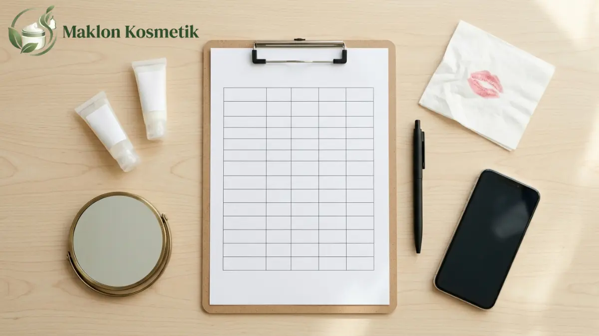

Lip cream adalah salah satu produk kosmetik bibir paling kompetitif di pasar lokal. Formula yang baik harus mampu menghadirkan warna pekat tanpa membuat bibir terasa kering atau pecah-pecah.
Sebelum menandatangani persetujuan produksi massal (mass production approval), brand owner wajib melakukan pengujian sampel laboratorium secara teliti dan sistematis.
Kelalaian dalam fase uji sampel dapat berakibat fatal. Kegagalan formula setelah ribuan kemasan terisi akan menimbulkan kerugian finansial yang sangat besar.
1. Urgensi Pengujian Sampel Sebelum Produksi Massal
Tahap prototipe sampel adalah peluang revisi paling fleksibel dan murah sepanjang siklus produksi maklon kosmetik.
Di fase ini, tim formulator R&D pabrik masih dapat mengganti jenis pigmen, menyesuaikan persentase emolien, atau mengubah aroma sesuai keinginan Anda tanpa biaya denda.
Jika formula baru dipermasalahkan saat proses pengisian botol telah berjalan, seluruh bahan baku dan biaya kemasan akan hangus menjadi limbah produksi.
2. Protokol Uji Pigmentasi dan Opasitas Warna
Kualitas lip cream diukur dari kemampuannya menutup warna asli bibir (terutama tepi bibir yang gelap) hanya dalam satu kali usapan aplikator (one-swipe coverage).
Lakukan pengujian swatch pada kulit tangan bagian dalam serta langsung pada bibir dengan membandingkan hasil pulasan tunggal dan penumpukan tiga lapis formula.
Pastikan warna tidak mengalami oksidasi (berubah menjadi lebih gelap atau kusam) setelah formula mengering secara menyeluruh selama 15 menit di udara terbuka.
3. Uji Ketahanan, Transfer-Proof, dan Efek Bleeding
Konsumen masa kini mendambakan lip cream yang tahan lama saat beraktivitas namun tetap mudah dibersihkan menggunakan pembersih wajah berbahan dasar minyak.
Untuk membuktikannya, jalankan serangkaian pengujian ketahanan fisik berikut pada beberapa relawan dengan tipe bibir berbeda:
- Tes Transfer Tisu & Gelas: Tunggu 3 menit hingga formula set, lalu tempelkan bibir ke cangkir bening untuk memantau residu pigmen yang tertinggal.
- Tes Ketahanan Makanan Berminyak: Uji performa warna setelah menyantap makanan hangat berlemak, apakah luntur merata atau mengelupas tidak beraturan di tengah bibir.
- Evaluasi Jam ke-1, ke-3, dan ke-6: Pantau apakah intensitas warna tetap konsisten atau memudar drastis sepanjang jam kerja aktif.
- Uji Garis Tepi (Bleeding): Perhatikan apakah pigmen merembes keluar garis bibir (feathering) seiring bertambahnya waktu pemakaian.

4. Evaluasi Sensoris: Tekstur, Kenyamanan, dan Aroma
Warna yang indah tidak akan diminati jika formula terasa lengket, menggumpal, atau membuat bibir terasa kaku seperti tertarik saat tersenyum.
Evaluasi tingkat kelembapan formula. Penambahan bahan aktif pelembap seperti vitamin E, shea butter, atau minyak jojoba akan meningkatkan rasa nyaman konsumen.
Periksa pula aroma dan rasa formula. Pastikan fragrance yang digunakan beraroma manis atau lembut tanpa meninggalkan jejak rasa pahit saat lidah tak sengaja menyentuh bibir.
5. Pengujian Stabilitas dan Batas Cemaran BPOM
Selain uji fisik organoleptik oleh brand owner, pabrik maklon wajib melaksanakan pengujian stabilitas dipercepat (accelerated stability test) di laboratorium.
Sampel disimpan dalam ruang inkubator bersuhu 40°C dengan kelembapan 75% selama 1 hingga 3 bulan sesuai pedoman ICH Q1A untuk memastikan kestabilan emulsi.
Badan POM juga menetapkan batas ketat cemaran logam berat pada kosmetik dekoratif bibir, di mana kadar timbal (Pb) tidak boleh melebihi ambang 20 mg/kg.
6. Format Lembar Penilaian Sampel (Scorecard)
Gunakan format penilaian terstruktur berskala 1 hingga 5 agar umpan balik (feedback) yang diberikan kepada tim formulator pabrik bersifat objektif dan terukur.
Tabel berikut merupakan contoh lembar evaluasi perbandingan antara prototipe Sampel A (matte finish) dan Sampel B (velvet finish):
| Parameter Pengujian | Deskripsi Kriteria Uji | Skor Sampel A | Skor Sampel B |
|---|---|---|---|
| Intensitas Pigmentasi | Kemampuan menutup warna bibir dalam satu pulasan | 4.8 / 5.0 | 4.2 / 5.0 |
| Kenyamanan (Non-Drying) | Bibir tidak terasa kaku, kering, atau perih | 3.9 / 5.0 | 4.7 / 5.0 |
| Daya Rekat & Transfer-Proof | Minim transfer pada tisu dan masker setelah kering | 4.6 / 5.0 | 3.8 / 5.0 |
| Kemudahan Aplikasi | Aplikator presisi dan formula meluncur mulus | 4.5 / 5.0 | 4.5 / 5.0 |
| Aroma & Rasa | Aroma vanila lembut tanpa rasa getir di lidah | 4.7 / 5.0 | 4.4 / 5.0 |
| Nilai Rata-Rata Keseluruhan | 4.50 (Lolos Uji) | 4.32 (Perlu Revisi) | |
7. Penetapan Golden Sample dan Toleransi Warna Batch
Ketika salah satu formula sampel telah disetujui, simpan botol tersebut sebagai golden sample resmi yang disegel dan ditandatangani oleh kedua pihak.
Pabrik akan menyimpan satu sampel pembanding dan Anda memegang satu botol duplikat sebagai dasar inspeksi saat produk jadi dikirim dari fasilitas produksi.
Sepakati pula batas toleransi variasi warna antar-batch (nilai Delta E) menggunakan spektrofotometer untuk memastikan konsistensi warna produk pada pesanan berulang.